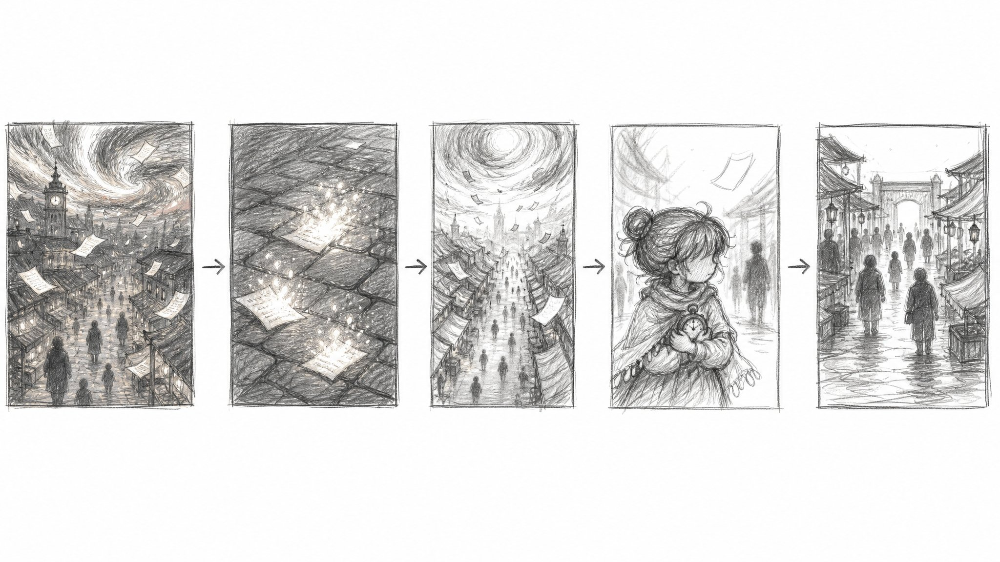

01A世界の異変——紙の降る夕方
S15-SEG00A-v4動画プロンプト（TapNow / Seedance）
【オリジナリティ表明】本編に登場するキャラクター・設定・衣装・物語要素は、すべて独立したオリジナル作品のための100%オリジナル創作である。既存のアニメ・漫画・ゲーム等のいかなる作品にも基づかず、参照もしていない。類似はすべて偶然である。本作は全年齢向け・健全・全キャラ着衣のオリジナルキャラクターアニメーションとして描く。 ## 基本設定 モード: R2V。15秒、16:9。1本の生成シーンとして描く。手描き2Dセルアニメ、セル影の人物と重い筆致の背景美術。全体は「世界の終わりの予兆（異色の空・天から降る紙）の中で、それでも続いていく貧しい市場町の夕方と、兄を待つ幼い妹」を描く。ティザーの第1カット。世界の異変と、小さな日常の営みを同じフレームに置く——後に消されるものの尊さを、先に生活の手触りで刻む。 前後接続: ティザーの開幕（前クリップなし）。天から降る紙＝「宇宙は原稿」の法則の予兆であり、後の創世プライマー（紙の宇宙）とクリップ01C末尾の宇宙ズームアウトへの遠い伏線。**降った紙が地面で光になって消える**カットは、後半の「白い削除＝世界が光にほどけて消える」の予告でもある。末尾の「市場の終い支度」の時間切迫が、次のクリップ01B（ルドの疾走）の焦りへ直結する。 ### 主要被写体 リファレンス: [Image1]はミナの顔立ち・お団子の髪・ショールとエプロンドレス・抱えた玩具の時計を固定する。[Image2]は時計塔市場の建築・レイアウト・夕方のパレットを固定する。[Image3]はラフ絵コンテ（横一列5コマ）で、カット順と構図**だけ**を固定する（雑な下書き線・質感は一切転写しない）。参照内の文字、資料ボード風レイアウト、余白、ネームプレート、ラベルは一切転写しない。 **音声リファレンス（audio/voice欄＝画像スロットとは別枠・画像5枚上限に含めない）:** - [Audio1] 声: mina_Lida.mp3 — ミナの確定ボイス。声質参照専用＝サンプル音声の文言は絶対に読み上げず、Dialogue欄のミナの実セリフをこの声質で演じる。ミナは全クリップで同一声を固定。 ⚠️モブ処理: ミナ以外の町の人々は**キャラシートがないため、顔を一切描かず、遠景の小さな後ろ姿またはシルエットのみ**で表現する。モブの顔のクローズアップは絶対に描かない。 - ミナ: 6〜8歳の少女。ふわふわの焦げ茶の髪を左右のゆるいお団子に、フリンジのニットショール——何度も繕った跡のある、それでも大切に着ている一張羅。腕には**兄が手作りした木の玩具時計**（丸型・木目・ローマ数字・提げ紐。買ってもらえない代わりに、兄が仕事の端材で作ってくれた宝物）。もう片方の手に小さな硬貨入れの巾着——今日のお買い物のために数えて貯めた分。 - 環境: 時計塔のふもとの市場町。夕方。空だけが通常と違う色——夕焼けに、ありえない色の層が静かに混ざっている（不気味だが美しい）。そこから、無数の白い紙がひらひらと降り続けている。 全体的な雰囲気: - 世界は終わりの予兆を降らせているのに、人々はまだ夕餉の買い物をしている——その日常の鈍さが、いとおしい。 - 貧しさは惨めさではなく「工夫と我慢の生活」として描く（繕った服・数えた硬貨・見切り時の市場）。 - ミナの不安は、空ではなく「来ない兄」に向いている——世界の異変より、子どもには約束の方が大きい。 ### シーン - 0.0-4.5秒: 世界の全景——異色の空と、降る紙。 - 4.5-7.5秒: 地面に落ちた紙が、光になって消える（人物なし）。 - 7.5-11.0秒: 上空から市場前へ——待つミナ。 - 11.0-15.0秒: 市場のパン——終い支度の気配。 ## 雰囲気と画質 ### スタイル - 手描き2Dセルアニメ。紙の雨は一枚一枚が作画で舞う（パーティクル風にしない）。 - 貧しさのディテールは丁寧に、しかし説明的にしない——繕い跡、硬貨の巾着、空の買い物かご。 除外: - パニック・悲鳴・群衆の混乱（人々は訝しむだけ。まだ誰も事態を知らない）。 - **モブの顔・表情・顔クローズアップ**（遠景シルエット/後ろ姿のみ）。 - 読める文字・値札の文字・看板文字・テロップ・透かし（値札は無文字の木札）。 - パネルグリッド、分割画面、白黒線画スタイル。参照シートの枠・ラベルの転写。 - フォトリアル、3D CG、実写レンズ表現。 ### カメラ - 2Dアニメの作画カメラ。世界の全景は雄大にゆっくり、市場は生活の目線の高さで。 - ミナのセリフ中は完全固定（リップシンク優先）。 ### 色彩とフィルター 主な色: 夕焼けの茜——にありえない色（青緑がかった光の層）が混ざる空。市場のランタンの琥珀。降る紙の白。ミナのショールの暖色。 質感: 石畳、木組みの露店、繕った布地、降る紙の薄さと軽さ。 ### 光 - 基調は低い夕陽の暖色。ただし空の異色の層が、地上のハイライトにほんのわずか冷たい色を差す——「何かがおかしい」を照明で。 - 紙が地面で消える瞬間、淡い光の粒がほどける。 ## サウンド - BGM: 無し。 - 環境音: 夕方の市場のざわめき（片付けの音・遠い呼び売り）、風。 - 同期音: 紙が地面で光になって消える瞬間の、かすかな息のような音。 - 声: ミナ1本＋町の人々の短い断片（訝しげな声——内容は自由に生成してよい。例:「なんだい、こりゃ」「雪……じゃないよねぇ」程度の生活の声。**声はオフ/遠景で、姿はシルエット**。長尺リップシンクは狙わない）。 ## 画面内容 ### Shot 1：世界の全景と、降る紙（0.0-4.5s） **サイズ：** 超ワイドの俯瞰→街並みの中景。 **構図：** 上部に異色の空、下部に時計塔と市場町の屋根並み。紙の雨が奥行き方向に何層も。人々は遠景の小さなシルエットのみ。 **カメラワーク：** 雄大にゆっくり降下しながら前進——空から生活の高さへ。 **画面内容：** 0.0-2.5s: 町の全景。夕焼けの空に、ありえない色の層が静かに混ざっている。そこから無数の白い紙が、雪のようにひらひらと降り続けている。世界の終わりの予兆——だが、まだ誰も知らない。 2.5-4.5s: 街並みの高さへ降りる。通りには帰路の人々（遠景シルエット）。降る紙が屋根や露店の天幕をかすめて舞う。 **台詞：** > 町の人々（断片・オフ声・自由生成可）「なんだい、こりゃ」「雪……じゃないよねぇ」 **全体的な雰囲気：** 世界は静かに終わりを告げているのに、誰も聞いていない。美しくて、少し怖い夕方。 ### Shot 2：地に落ちた紙、光になる（4.5-7.5s） **サイズ：** 石畳のクローズ（人物なし）。 **構図：** 濡れた石畳の地面。降ってきた紙が数枚、落ちている。 **カメラワーク：** 静かな寄り——紙の一枚に焦点。 **画面内容：** 4.5-6.0s: 石畳に、紙がふわりと着地する。数枚。夕暮れの光を受けて、ほんの一瞬そこに在る。 6.0-7.5s: 着地した紙が、その場から**淡い光の粒になってほどけ、消えていく**——燃えるのでも溶けるのでもなく、光になって還る。石畳には何も残らない。**世界が、静かに減りはじめている。**（この時点では誰もそれを削除だと知らない） **台詞：** なし。 **全体的な雰囲気：** 一枚の紙は一つの宇宙。落ちて、光になって、消える——後で観客はこの意味を知る。 ### Shot 3：待つミナ（7.5-11.0s） **サイズ：** 上空からの俯瞰→ミナのミディアムクローズアップ。 **構図：** 市場の入口、雑踏（シルエット）の端にぽつんと小さなミナ。 **カメラワーク：** 上空から市場前へ滑らかに寄り、ミナのMCUで静止（セリフ用）。 **画面内容：** 7.5-9.0s: 上空から市場前へ。行き交う大人たち（遠景シルエット・後ろ姿）の間に、小さな女の子——ミナ。玩具の時計を胸に抱え、硬貨の巾着をきゅっと握って、つま先立ちで通りの先を何度も覗く。 9.0-11.0s: ミナのMCU（完全固定）。眉が下がり、不安げに——「おにいちゃん、……どうしたんだろう」。降ってきた紙がひとひら、彼女のすぐ横をかすめて、ふっと消える。ミナはそれに気づかない——彼女の目は、兄の来るはずの道だけを見ている。 **台詞：** > ミナ「おにいちゃん、……どうしたんだろう」 固定MCU中に発話。リップシンク最優先。不安と健気さ。 **全体的な雰囲気：** 世界の異変より、約束のほうが大事な子ども。その小ささが、この物語の賭け金になる。 ### Shot 4：終い支度の市場（11.0-15.0s） **サイズ：** 市場の中景・横パン。 **構図：** 左から右へ、市場の「今日の終わり」を状況として見せる。人々は全て後ろ姿・シルエット。 **カメラワーク：** 左→右への一定の横パン。 **画面内容：** 11.0-13.5s: 市場の中を左から右へパン。まだ活気は残っている——だが店主たち（後ろ姿）は木箱を重ね、売れ残りに無文字の木札を差し、天幕を畳みはじめている。買い物を終えた人々（シルエット）が、出口へ向かって流れていく。 13.5-15.0s: パンの終わり、市場の奥の時計塔が見える——長針が、17時の少し手前。今日の営業の終わりが、もうすぐそこまで来ている。降る紙が、市場の灯りに照らされてちらちらと光る。 **台詞：** なし。 **全体的な雰囲気：** 見切り品の時間にしか買い物できない人たちの、それでも温かい市場。この場所ごと、後で消される。